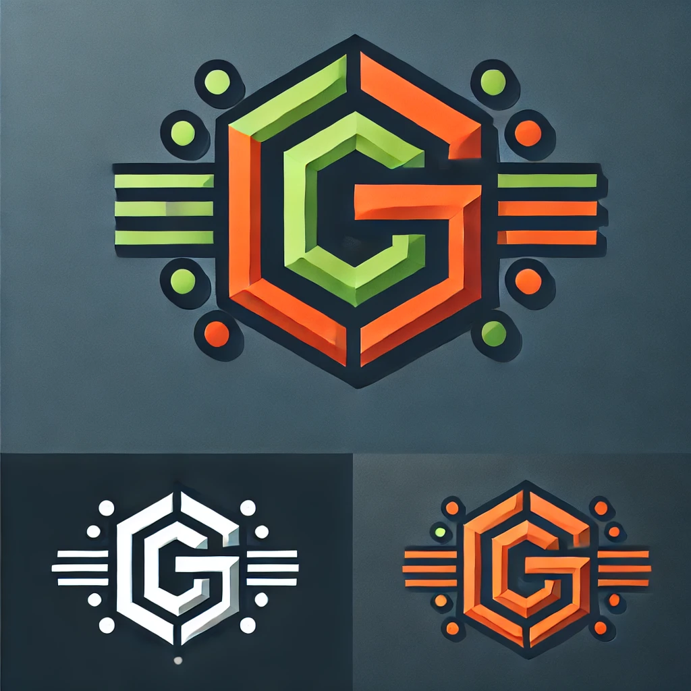

Generative Simulation is an emerging paradigm that develops advanced numerical simulations using elemental "bricks" accessible to text-generative AI models. In short, tools like ChatGPT and its consorts excel at programming across many languages and grasping high-level, macroscopic concepts. However, they cannot seamlessly connect physics, chemistry, biology, and mathematics to solve real-world scientific and engineering problems.
Generative Simulation provides modular bricks—representations of physical or conceptual building blocks—that Large Language Models (LLMs) can understand and manipulate to bridge this gap. These bricks can be designed with AI assistance, but the overarching logic, scientific insight, and problem-specific nuance remain in human hands. Once the bricks form a structured language, the subsequent stages of model development, simulation assembly, or code generation can be delegated back to the AI and iteratively refined under human supervision.
The bricks provide a clear context that LLMs can follow. Simulations and scenarios can be produced from prompts including specific instructions. Clear examples, reusable classes, and operators overcome the current limitations of the considered context window size.

Pizza3 is a toolkit designed to simulate the mechanics of soft matter using LAMMPS (Large-scale Atomic/Molecular Massively Parallel Simulator), with fully reusable Python objects that AI can understand and extend. This modular approach simplifies the integration of physics across multiple scales, while abstracting away unnecessary details for large-scale, concurrent simulations running in the cloud.
SFPPy is a high-level Python framework that accelerates the evaluation of the safety of materials in contact with food and related products. Based on mass transfer simulations, the methodology is already recognized by authorities in the EU, US, and China. The tool offers a compact syntax to assess the migration of numerous substances in complex scenarios by automatically connecting to databases, computing mass transfer properties from chemical structures, and simulating migration across all layers of a material. The established methodology is further accelerated through AI-enabled scenario generation, simulation execution, and automated report writing within Jupyter Notebooks.
SFPPylite is a proof of concept that runs the full SFPPy framework directly in a browser using WebAssembly technology, without the need for a server or software installation. The service supports collaboration and review by regulatory authorities, making it easier to share and validate compliance results. In other words, the end-user can simply copy/paste from/to their preferred chatbot and have simulations running without infrastructure or deep knowledge of modeling and simulation.